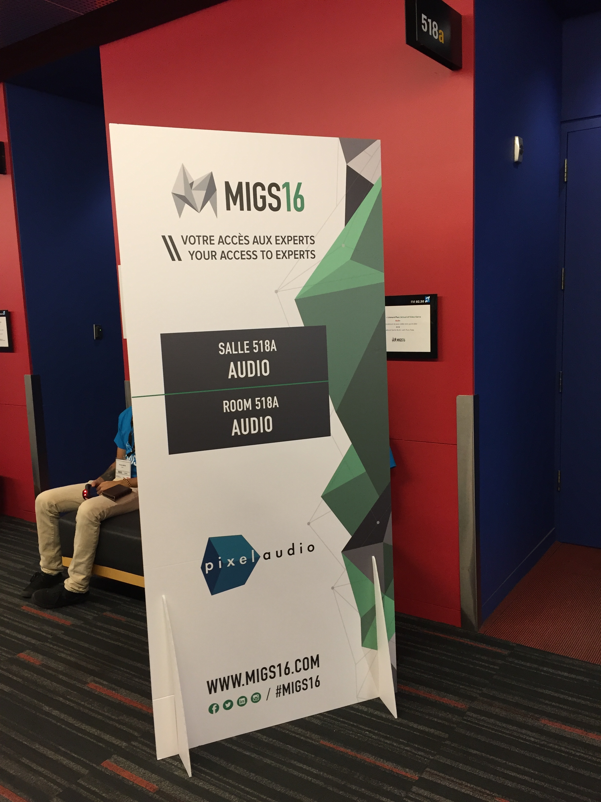

一年一度的蒙特利尔国际游戏峰会 MIGS 2016版过去一阵子了，MIGS 在规模上无法跟 GDC 这样的老字号相提并论，不过每年还是有些有用的技术演讲，在此追记一下自己去过那几场的要点，主要是音频专场。

Leonard Paul “PROCEDURAL GAME AUDIO WITH PURE DATA”

Leonard Paul 是一位独立游戏音频设计师和教师，他开的 School of Video Game Audio 也小有名气。这次的演讲中他以 Unity 示例游戏作为蓝本介绍了用 Pure Data（PD）实现 procedural audio（下称 PA）音频设计一些可能性。会后他还发布了这次演讲的幻灯和录音。
在这个例子中 Leonard 展示了几个 PD patch。通过自己设计的 OSC（Open Sound Control）消息让这些 patch 和 Unity 端 C# 实现的OSC 模块通信，实现了一条音频原型迭代的管线：在 PD 中创建和修改设计，通过 OSC 来实现游戏运行中试听和调整混音等。演示的声音大多采用简单的加法／减法／模态（Modal）合成方法，坦克碰撞声采用了 Karplus-Strong 算法。
关于 PD 生态的现状，Leonard 说 libpd 的性能还达不到游戏要求的实时性，但 Enzien Audio 的 Heavy 系统的性能很有希望。目前 Heavy 支持大部分 PD 的对象，只有极少数关键对象比如 expr～ 不支持。
不过 Leonard 也表示使用 PA 有一些注意事项：
- 不应该为 PA 而 PA。从审美上不是所有的游戏都适合 PA，演讲采用的坦克游戏碰巧是美式动漫风，所以适合用常用的合成技术表现；
- 用 PA 做声音只是音频设计流程中的一方面，走这条路还需要自己实现通信协议、混音器、voice 控制，性能优化这些操作；
- 同一个功能可能有不同品质和性能代价的算法实现，可以考虑根据实时性能的波动在不同算法实现中切换以达到最优性价比；
- Heavy 这样的 PA 系统性能虽有进步，但仍然有不稳定而崩溃的现象；
- 在大型项目中还是应以中间件为出发点。
感想：利用创意编程工具实现 PA 目前还是一个技术性很强的领域，Leonard 自我介绍时强调自己的编程背景并已经有 20 多年使用 Max（90 年代初还没有 MSP）和 PD 的经验也侧面佐证了这一点。
RJ Mattingly “MAKING THE SHARPEST GAME AUDIO TOOLS IN THE SHED”

RJ Mattingly 是 PopCap 的技术声音设计师。PopCap 现在全面采用 Unity + Wwise 的音频开发流程，在演讲中他介绍了为优化 PopCap 内部工作流程写的一些小脚本工具，基本都用 Python 语言实现。
SoundBank 管线工具
PopCap 的 SoundBank 处理管线见上图。
他们早期基于 Perforce 的流程中声音设计师不但提交 Wwise 工程文件，还提交 SoundBnak。这样一来因为 SoundBank 是团队共享的，所以容易出现冲突。RJ 的第一个显而易见的改进便是规定设计师不提交 SoundBank（设计产物），而只提交代表设计本身的工程文件，并在 Jenkins 管线中通过脚本使用 Wwise 自带的命令行工具生成唯一一份 SoundBank，既解决了冲突问题还省了空间。
在生成 SoundBank 前忘了向 SoundBank 中添加必要的文件或者多个 SoundBank 中有重复的音频源文件是常见的人为错误，但数据量大起来有时出错几个礼拜之后才会发现。RJ 因此利用 Wwise 中 SoundBank 生成的后处理 post-generation step 写了一个脚本来分析 Wwise 自动生成的日志，找到与缺少和重复文件相关的信息，并自动群发邮件。这样一来，错误一般都能当天发现并修正。
Event 工具
在性能优化上，Wwise 中虽然有最大复音数限制机制，但有些时候会想从事件级别来做限制，比如三消游戏《Bejeweled》系列中的爆炸如不加限制会引爆上百个事件。RJ 于是把 Wwise 事件下的 Notes 这个属性当作标签字段来用，因为属性保存在事件所在的 WorkUnit（.wwu）文件中，于是他写了一个脚本工具在 Notes 中加入自定义的事件限制编码，设计师也可以在 Wwise 中进一步手动调整，然后工具会分析 .wwu 生成游戏程序可以读取的 metadata 作为事件限制的参考数据。
动画配声用的工具
在《Plants vs. Zombies: Heroes》中有 300 多个角色，每个角色有 5-20 个动画序列，所以手工配声工作量巨大。于是 RJ 写了一个 Unity UI 拓展能够改进这个流程，并能够自动比较 Unity 端登记的动画 Event 和 Wwise Authoring 端的 Event，保证 Unity 端登记的事件确实存在。
设计师往往喜欢把 Unity 的动画导出成视频文件然后到 DAW 中配声，但 Unity 没有这种导出支持。于是 RJ 写了工具自动导出动画成视频，方法是：将动画帧自动截屏成图片，再用开源命令行工具 ffmpeg 将这些图片批量组装成视频文件。